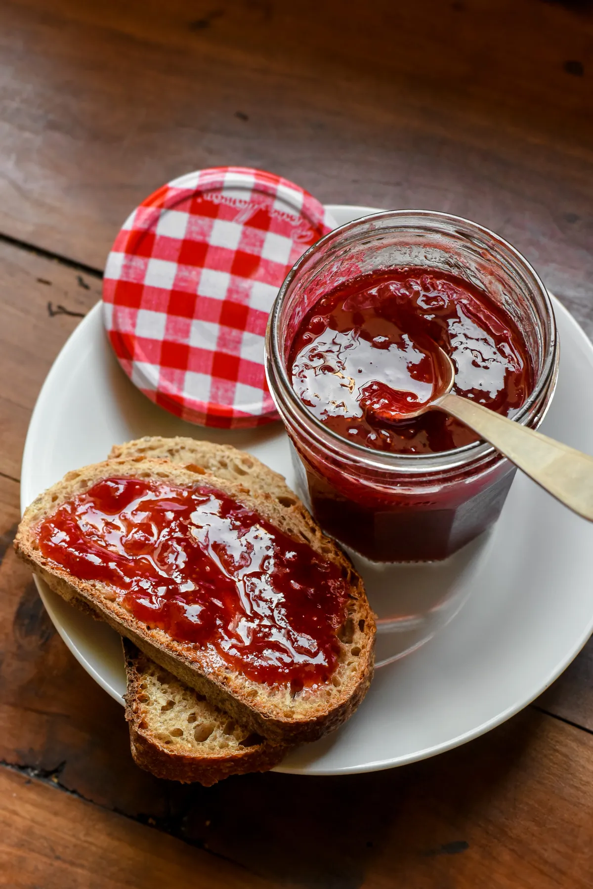

Use your locally grown fruit to make yourself some nice jam!
Ingredients
- 2 cups of fresh fruit (strawberries, blueberries, etc.)
- 1 cup sugar
- 2 tbsp lemon juice
Instructions
- Prepare the Fruit: Wash and chop the fruit.
- Cook the Mixture: In a large saucepan, combine the fruit, sugar, and lemon juice. Cook over medium heat, stirring frequently, until the mixture thickens (about 20-30 minutes).
- Jar the Jam: Pour the jam into sterilized jars, seal, and store in a cool place.